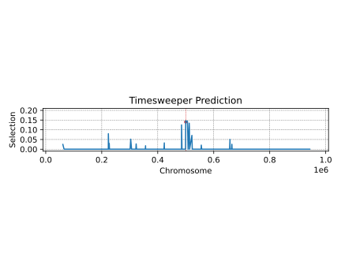
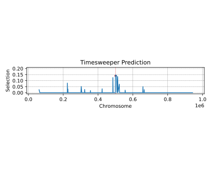

About myself

Postdoctoral researcher
UniFR
UniFR
Education
2016 - BSc, Applied Mathematics (St.
Petersburg)
2018 - MSc, Algorithmic Bioinformatics (St.
Petersburg)
2023 - PhD, Engineering (ITMO University, St.
Petersburg)
Current position
Postdoctoral Researcher, Prof. Wegmann's group,
University
of Fribourg, Fribourg, Switzerland.
Research
-
GADMA: Easy Demographic Inference
[Noskova et al. 2020] [Noskova et al. 2023] [Noskova & Borovitskiy 2023]
- PopSim consortium:
Agenda
- Data and Model
-
Introduction to HMM:
- Markov Chain
- Hidden Markov Model
-
Joint Inference of Demography and Selection:
- Step 1: Independent Loci
- Step 2: Linkage Concern
Data and Model
Data and Model

Find $\theta^\star: P(Data \big|\, \theta) \to \max$, where $\theta=(N_p, m_{pq}, s^p_l)$
Introduction to HMM
Markov Chain
A sequence of random variables $X(t_k)$ is called Markov chain if:
- $X(t_k)$ depends only on the state $X(t_{k-1})$ of the prev. time point: $$\small P(X(t_k) = j \,|\, X(t_0)=x_0, ..., X(t_{k-1})=i) = P(X(t_k)=j \,|\, X(t_{k-1})=i) = P_{i,j}$$ $P_{i,j}$ is called a transition matrix.
The future state of the system depends only on its current state.
Markov Chain
$\text{States} = \Big\{$
 $,\ $
$,\ $
 $\Big\}$
$\Big\}$
$,\ $
$\Big\}$
$$\text{Transition}\ P = \begin{pmatrix} 0.3 & 0.7 \\ 0.4 & 0.6\end{pmatrix}\ \ \ \ \ \ \ $$
Hidden Markov Model
The pair $[X(t_k), C_k]$ is a hidden Markov model if:
- $X(t_k)$ is a Markov chain that is considered to be hidden
- $C_k$ are called observations
-
Outcome $C_k$ is "influenced" exclusively by the outcome $X(t_k)$:
$$P\left(C_k \,|\, X(t_1), ..., X(t_k)\right) = P\left(C_k \,|\, X(t_k)\right)$$
$P(C_k \, |\, X(t_k))$ is called emission probability
Goal: learn about $X(t)$ by observing $C_k$
Hidden Markov Model
$\text{States} = \Big\{$
$,\ $
$\Big\}$
$,\ $
$\Big\}$
 $$\text{Transition}\ P = \begin{pmatrix} 0.3 & 0.7 \\ 0.4 & 0.6\end{pmatrix}\ \ \ \ $$
$$\text{Transition}\ P = \begin{pmatrix} 0.3 & 0.7 \\ 0.4 & 0.6\end{pmatrix}\ \ \ \ $$
$$\text{Emission}\ \mathcal{B} = \begin{pmatrix} 0.9 & 0.1 \\ 0.2 & 0.8\end{pmatrix}\ \ \ \ $$


Hidden Markov Model Classical Algorithms
Given: sequence of observations
- Viterbi algorithm finds most likely sequence of hidden states
- Forward-Backward algorithm finds the probability of a hidden state of interest at step $t$
-
Learn parameters of HMM:
- Baum-Welch algorithm (maximum likelihood)
- MCMC (samples from likelihood function)
MCMC and Forward Recursion: continuous case
Consider:
$$ \htmlData{class=fragment fade-out,fragment-index=6}{ \small \mathclap{ \alpha_k(y) := P\left[ X(t_k)=y, C(t_0)=c_0, \ldots, C(t_k)=c_k \right] } } \htmlData{class=fragment d-print-none,fragment-index=6}{ \small \mathclap{ \alpha_k(\tau,y) := P\left[ X(t_k+\tau)=y, C(t_0)=c_0, \ldots, C(t_k)=c_k \right] } } $$The $\alpha_k$ satisfy the forward recursion:
$$ \htmlData{class=fragment fade-out,fragment-index=6}{ \small \mathclap{ \alpha_k(y) = \sum_x \alpha_{k-1}(x) P(X(t_k)=y | X(t_{k-1})=x) \mathcal{B}(c_k | x), } } \htmlData{class=fragment d-print-none,fragment-index=6}{ \small \mathclap{ \alpha_k(\tau,y) = \int \alpha_{k-1}(\Delta t_{k-1},x) \mathcal{B}(c_k | x) p(\tau,x,y) \,dx, } } $$
Likelihood of data given HMM parameters $\theta$:
$$ \htmlData{class=fragment fade-out,fragment-index=6}{ \small \mathclap{ P\left[C(t_0) = c_0,\ldots, C(t_K)=c_K | \theta \right] = \sum_y \alpha_{K}(y) \bigg\rvert_{\theta} } } \htmlData{class=fragment d-print-none,fragment-index=6}{ \small \mathclap{ P\left[C(t_0) = c_0,\ldots, C(t_K)=c_K | \theta \right] = \int \alpha_{K}(0,y) \,dy \bigg\rvert_{\theta} } } $$Using MCMC we can sample from $P(Data | \theta)$
Joint Inference of Demography and Selection
Data and Model
Find $\theta^\star: P(Data \big|\, \theta) \to \max$, where $\theta=(N_p, m_{pq}, s^p_l)$
Step 1: Independent Loci
Hidden Diffusion Model


Wright-Fisher as a Hidden Process
- Generations are non-overlapping
- Two alleles in considered locus: $A$ and $a$
- $X(t)$ the rel. frequency of allele $A$ in population at generation $t$
-
$\psi_i$ the probability to choose $A$ if its frequency is $i$
$$\footnotesize \text{e.g.}\quad \psi_i = \frac{i}{2N}, \quad \text{for constant pop. size } 2N$$
-
Wright-Fisher model: $X(t)$ Markov chain with binomial transition:
$$\footnotesize P\left(X(t+1) = \frac{j}{2N} \biggr\rvert X(t) = \frac{i}{2N}\right) = \binom{2N}{j} (\psi_i)^j (1-\psi_i)^{2N - j} $$
- If $N \to \infty$ then $X(t)$ $\to$ continuous-time continuous-space Markov chain (Markov process)
- This process is defined by transition probability density $p(\tau, x, y)$ to go from state $x$ to state $y$ in time step of $\tau$
-
$p(\tau, x, y)$ satisfies Kolmogorov forward equation:
$$\frac{\partial}{\partial \tau}p(\tau, x, y) = \frac{1}{2} \frac{\partial^2}{{\partial y}^2} \left[b(y)p(\tau, x, y)\right] - \frac{\partial}{\partial y} \left[a(y) p(\tau, x, y)\right]$$where $a(y)$ and $b(y)$ infinitesimal mean and variance
- This process is called Wright-Fisher diffusion


Hidden Diffusion Model

MCMC and Forward Recursion
In order to compute $P\left(\{c_k\}_{k=0}^K \big| \theta\right)$ in condition of hidden Wright-Fisher model with parameters $\theta=[N_p, m_{pq}, s_p]_{p,q=1,..,P}$:
- Build infinitesimal mean $a_p(x)$ and variance $b_{p}(x)$ according to $\theta$
-
For each $k=1,\ldots,K-1$ do:
-
Obtain $\alpha_k(t_{k+1} - t_k,y)$ by solving forward equation:
$$\frac{\partial}{\partial \tau}\alpha_k(\tau, y) = \frac{1}{2}\sum_{p=1}^P \frac{\partial^2}{{\partial y_p}^2} \left[b_{p}(y)\alpha_k(\tau, y)\right] - \sum_{p=1}^P \frac{\partial}{\partial y_p} \left[a_p(y) \alpha_k(\tau, y)\right]$$ $$\text{subject to: }\alpha_k(0, y) = \alpha_{k-1}(t_{k} - t_{k-1}, y) \mathcal{B}(c_{k} | y)$$
-
-
Evaluate:
$$P\left[C(t_0) = c_0,\ldots, C(t_K)=c_K \, \big| \, \theta\right] = \int \alpha_{K}(0,y) \,dy$$
Example Result for One Population
Step 2: Linkage Concern
Second-Layer HMM over Genome

Proposed Transition Matrix
Ideas:
- Most positions in genome are neutral
- Selection coefficients of neighbour loci should be close on the grid
Existing solution (Galimberti et al. 2020): $Q = \exp(d_l \cdot \Lambda)$, where
$$\footnotesize \Lambda = \kappa \begin{pmatrix} -1 & 1 & 0 & 0 & \ldots & 0 & 0 & 0 & 0 \\ \mu & -1-\mu & 1 & 0 & \ldots & 0 & 0 & 0 & 0 \\ 0 & \mu & -1-\mu & 1 & \ldots & 0 & 0 & 0 & 0 \\ \vdots & \vdots & \vdots & \vdots & & \vdots & \vdots & \vdots & \vdots \\ 0 & \vdots & 0 & \nu \mu & -2 \nu \mu & \nu \mu & 0 & \vdots & 0 \\ \vdots & \vdots & \vdots & \vdots & & \vdots & \vdots & \vdots & \vdots \\ 0 & 0 & 0 & 0 & \ldots & 1 & -1-\mu & \mu & 0 \\ 0 & 0 & 0 & 0 & \ldots & 0 & 1 & -1-\mu & \mu \\ 0 & 0 & 0 & 0 & \ldots & 0& 0 & 1 & -1 \\ \end{pmatrix} \begin{matrix} \leftarrow s=s_{\max} \phantom{-} \phantom{-} \phantom{-} \phantom{-}\\ \\ \\ \\ \\ \leftarrow \text{attractor (} s=0\text{)}\\ \\ \\ \\ \\ \leftarrow s=-s_{\max} \phantom{-} \phantom{-} \phantom{-} \\ \end{matrix} $$Issue with Negative Selection
Neighboring loci can show selection of different signs, although similar absolute values
According to our Wright-Fisher model: $$\small s \text{ for allele } a = -\frac{s}{1+s} \text{ for allele } A$$
Solution: infer positive selection $|s|$ and sign $\sigma$
Proposed Transition Matrix
Ideas:
- Most positions in genome are neutral
- Selection coefficients of neighbour loci should be close on the grid
- Infer positive selection $|s|$ and sign $\sigma$
Proposed transition matrix: $Q = \exp(d_l \cdot \Lambda)$, where
$$\footnotesize \Lambda = \kappa \begin{pmatrix} -1 & 1 & 0 & 0 & \ldots & 0 & 0 & 0\\ \mu & -1-\mu & 1 & 0 & \ldots & 0 & 0 & 0 \\ 0 & \mu & -1-\mu & 1 & \ldots & 0 & 0 & 0 \\ \vdots & \vdots & \vdots & \vdots & & \vdots & \vdots & \vdots\\ 0 & 0 & 0 & 0 & \ldots & \mu & -1-\mu & 1\\ 0 & 0 & 0 & 0 & \ldots & 0 & \nu \mu & -\nu \mu\\ \end{pmatrix} \begin{matrix} \leftarrow s=s_{\max} \phantom{-} \phantom{-} \phantom{-} \phantom{.}\\ \\ \\ \phantom{\ldots}\\ \\ \leftarrow s=s_0 \phantom{-} \phantom{-} \phantom{-} \phantom{-} \phantom{.}\\ \leftarrow \text{attractor (} s=0\text{)}\\ \end{matrix} $$Preliminary Results for One Population
Selection Inference Comparison
We simulated a chromosome with length of 1 Mbp using SLiM:
- Population size is equal to 1,000 individuals
- Recombination rate and mutation rate are equal to $10^{-8}$
- Beneficial mutation is introduced in the middle of the chromosome
- Sampling is initiated after the frequency of beneficial allele reaches the value of $30\%$
- 10 time points, 10 generations apart, 100 individuals each
We compared the performance with existing solutions for one population:
- ApproxWF [Ferrer-Admetlla et al. 2016]
- TimeSweeper [Whitehouse & Schrider 2023]
Selection Inference Comparison
 


Confusion Matrix

Conclusions and Future Work
Conclusions and Future Work
- Wright-Fisher HMM is a powerful tool
- Hidden Diffusion is faster than existing HMM solutions (ApproxWF)
- Second-layer HMM over genome captures linkage between loci
Future work:
- More experiments
- Multiple populations
Thank you!

Slides: